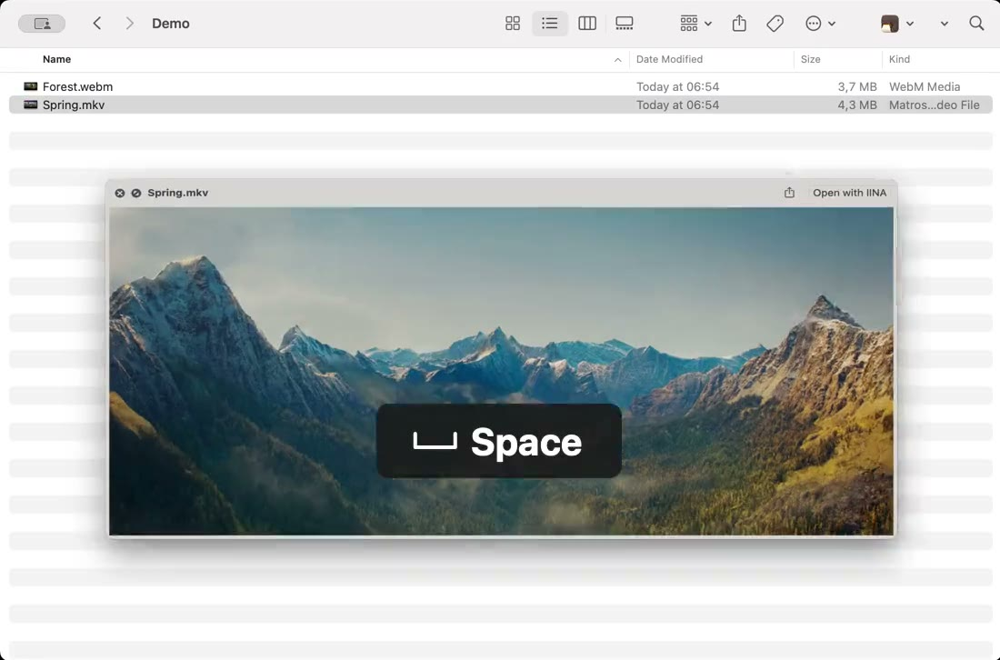

MKV on Mac
Preview MKV files on your Mac with a single press of Space
Your Mac can’t show MKV files: Quick Look only displays an icon and Finder has no thumbnail to offer. VideoGlance adds what’s missing, without changing your habits.

Still from Spring — © Blender Foundation | cloud.blender.org/spring. CC BY 4.0. Scaled excerpt shown in a Finder recording, with an added key annotation. No affiliation with Blender Foundation.
Why won’t my Mac open MKV files?
MKV, or Matroska, is a very common format for movies, TV shows, game recordings and OBS Studio videos. A single file can hold several audio tracks, subtitles and chapters.
macOS doesn’t support this format: QuickTime Player won’t open it, and pressing Space in Finder only shows a large icon with the file’s name and size. To see what’s inside, you usually have to open it in a separate player.
Preview an MKV with Quick Look
- Install VideoGlance, just once.
- In Finder, select the MKV file.
- Press Space: the preview opens and playback starts.
Move the pointer over the image to reveal the controls: play and pause, 15-second skips, progress bar, volume, speed and full screen. Press Space again, or Escape, to close the preview. The guide explains each control.
MKV thumbnails in Finder
With VideoGlance, your MKV files show a frame from the video in Finder, with its original proportions. The Preview pane on the right of the window also lets you start playback and browse the video with a progress ring, without opening a window.
Which MKV files play?
An MKV file can contain different codecs. VideoGlance has been tested with the most common ones: H.264 and HEVC (H.265) video, including 10-bit, with AAC, AC-3, E-AC-3 or FLAC audio. File paths with spaces, accents or non-Latin characters are supported.
An MKV using a rarer codec may not display. The Formats page lists every tested codec.
Audio tracks and subtitles
Quick Look is for a quick look: VideoGlance plays the file’s default audio track. Choosing another language or subtitles isn’t offered; for that, open the video in your usual player.
What about watching the whole movie?
VideoGlance doesn’t replace your video player. Double-clicking still opens the app of your choice, such as IINA or VLC. VideoGlance is for recognizing a video, browsing it and checking its content in seconds, right from Finder.